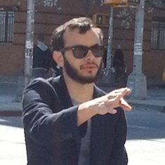
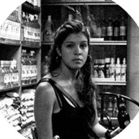

We're a digital marketing agency; we innovate to help others become more social, and with it a more successful business. We accomplish this goal through the development of unique but exciting strategies in the digital world.

Creativity takes courageHenry Matisse


We're a digital marketing agency; we innovate to help others become more social, and with it a more successful business. We accomplish this goal through the development of unique but exciting strategies in the digital world.

Creativity takes courageHenry Matisse
Who we are
Every person on our team is an expert in their field therefore a part of a perfect gearset that optimizes our performanceDon't you believe US?
Check US out
-
+

GabrielJimenez
CEO
He is a young entrepreneur who has accomplished an extended experience in negotiating and providing tools and solutions in different fields of expertise. He has developed experience recruiting talent to export Social Media services through Latin America and the United States, offering creative solutions at accessible costs with impeccable quality.
Gabriel is a Lawyer graduated in Venezuela. Although he has experience in the banking industry serving as the deputy vice president of a bank in Dominican Republic, his passion has taken him to venture into the public policy area on capitol hill at the Nation's Capital. He has founded a nonprofit association uniting more than 20 civil organizations, community centers and local governments, leading them to work on projects focused on helping populations in need in Venezuela.
He is constantly exploring his creative side promoting dynamics and experiences in and outside the workplace, standing up to a service committed to innovate and spread the social word. He’s always encouraged to provide exciting and pragmatic strategies in the digital world.
-
+

FroilanPaez
Administrative Manager
Froilán studied Business Administration in “Universidad Católica Andrés Bello”, he has developed leadership and management skills in Human Resources. He has attended several conferences nationally and internationally, creating a wide network of contacts which has improved his social and professional skills in team development.
He has worked in the area of human and social development in different foundations and organizations finding a calling in social service. He likes to be curious and he’s always looking to expand his knowledge and experiences.
-
+

JoeRayGarcia
Business Executive
JoeRay Garcia is an ambitious, diverse individual who is determined to find out how to make companies more successful. He is a graduate of The University of Texas at San Antonio and has worked in a variety of different fields, including PR, marketing and public policy on Capitol Hill.
He is a native Texan and is a lifelong San Antonio Spurs fan. He values an active and healthy lifestyle through outdoor activities. His love for sports has led to his involvement as an assistant coach for youth basketball. Through his desire of community involvement, JoeRay volunteers in several different charities.
-
+
ChrisMiller
Sales Manager
Chris Miller, a former student from Texas A&M University has dedicated his life to business, perfecting relationships, and all spectrums of the entrepreneurial world.
His expertise falls in client relations, marketing excellence, and business analysis; leaving him with a perfect skillset for finding and implementing the optimum level of marketing solutions to clients. Chris also has a great amount of sales experience under his belt attending training camps, workshops, and seminars.
Through his experiences, he has learned to master and grow client relations with an understanding that the relationship is much more than just a business deal. Chris always emphasizes honesty, integrity, and doing the right thing for the client. Lastly, Chris has a background in general economics and finance as well, leaving him in a unique position to relate to the client at.
-
+
PiityParra
Marketing Advisor
Piity is a professional graduate from the Universidad Central de Venezuela, with a major in Social Communication. She has 20 years of experience in advertising and 10 years in the digital marketing field. She specializes in global strategic communication with six years of expertise in digital marketing.
As a Marketing Advisor, she feels passionate about what she does. That’s why she trains her work team professionally and personally. Piity focuses on giving her team real life tools and accomplishing her life mission: being happy, along with her personal goal: bringing happiness to everyone she can.
She shares her profession along with the beautiful job of raising her son. She’s the proud mother of a handsome 7 year old, Aquiles. She’s thrilled about sports, meditation and respect. As a buddhist she practices the cause and effect law. Her main principle in life is making good causes in order to generate good consequences.
-
+
MarielPischek
General Manager
She has more than 3 years of experience in the digital marketing, playing different roles in account departments. She has developed a great deal of experience managing daily communications between clients and agencies. She ensures the fulfilment of the internal work processes of production area and encouraging the achievement of new and exciting goals.
Born in Caracas, Mariel was a little bit of a nomad in her adolescence years. Then she return to her roots in the city to study what she was passionate about, Social Communications. As a student she fell in love with marketing and advertising. From that time on she has constantly been looking for new, helpful information and trends.
Most of all she loves to breath clean air and stare at the mountain, living freely.
-
+

GabrielaFlores
Chief Content Officer
Gabriela studied Social Communications with Mention in Graphic Journalism. She started off in the marketing field as a copywriter for sms broadcasts and miscellaneous content for special campaigns and promotions. In 2011, she became involved in content designing and developing for websites as a strategic communicator. In the past 4 years she has been mastering the creation of global social media strategies as a content curator and later as social media manager to launch promote and position many brands. With her experience she has learned to create fresh and new ideas to enhance the consumer's needs and wants.
Gabriela is also a collage freak, movie lover, dressmaker wannabe, amateur chef, and a never-ending storyteller!
-
+
MarianaBrand
Art Director
Suli is from Venezuela, she's a national and international award-winning designer with more than 8 years of digital agency experience.
She studied Advertising and Marketing, and has developed as a professional capable of providing exciting and intelligent solutions to each project. She provides excellent program management, because she's always looking forward to the research of new tools that will offer our customers upgrades on its image.
Suli is always attentive to new trends and innovations in life because she believes, “it is the best way to stay in the digital marketing industry". She loves what she does, but enjoys the time she has with her family and friends: -"We must maintain a balance between work and family"
-
+

CarlosLozada
Digital Marketing Assistant
Born and raised in the streets of east Caracas, Charly is a social communicator teammate with extended experiences in media analysis. He is also fluent in Spanish, English, and French. He is continuously working to be an interpreter in the social media and digital world because he believes when it comes to the digital world, "Opportunities here are infinite!”.
Charly is a passionate animal lover and is a proud father of a boxer, Afi! He enjoys art and nature. He believes creativity is a treasure of the human mind. Always sharing and picking up new things. He has been teaching English since high school and loves what he does!
Keep calm and rock and roll!